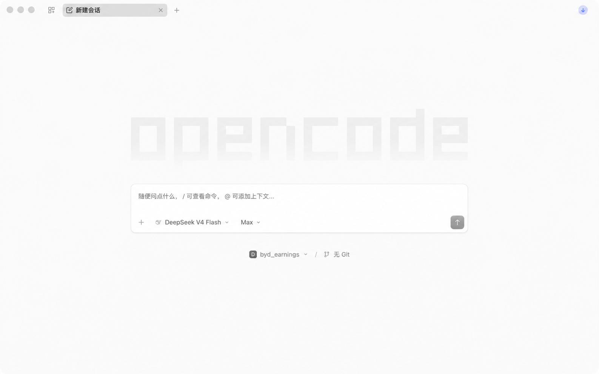

把一份半年报，
做成可复核的简报。
这次课要解决什么问题？
本次案例把营业收入作为核心财务指标，同时用营业成本、营业利润、归母净利润和基本每股收益做交叉核对。你要把比亚迪 002594.SZ 的 2026H1 与 2025H1 整理成一页简报。输入是公司公告与结构化财务数据导出文件。当前示例使用 Hithink，课堂也可以替换为 CSMAR 导出数据。输出是口径说明、原值、计算结果、差异和来源引用。 最终输出是一页可回查的 HTML 业绩简报。
完成后，你能先用任务、工具、状态、检查和停止条件描述一个 Agent，再重跑同一流程：保留准备工作，写任务契约，提取 raw_values，用 convert_units 产生 unit_values，用 calculate_yoy 产生 yoy_values，运行固定核验，再让四个 Agent 依次完成取证、计算、核对和写简报。
H1 表示半年累计。没有公告或共识就不写原因、beat/miss、earnings surprise、估值或投资建议。模型可以读原文和整理文字，固定代码负责换算、同比、核验和放行。老师可以使用已有 Coding Agent 工具，也可以用 OpenCode 配合 DeepSeek。
demo 与讲义的关系：现场 demo 的六个 approaches 是对照实验：它展示哪一步会失败，以及工具如何修复。正文只保留修复后的工作步骤；失败结果在对应步骤中作为检查点。
按下面九步完成
每一步都留下文件。下一步只读取已经通过检查的结果。
先分清 Chat 和 Agent：一次回答，还是一项任务？
为什么同一个模型有时只是聊天，有时可以被称为 Agent？
怎么做
先用一个熟悉的例子区分两种用法：Chat 是你提出问题，模型返回一段回答；Agent 是你给出目标，系统在多个步骤中读取文件、调用工具、保存状态、检查结果，直到完成或停下。两者可以使用同一个模型，区别在于是否有任务流程、工具、共享状态、检查和停止条件。
为什么
这不是给工具贴品牌标签，而是给任务划边界。问“这家公司收入为什么下降？”得到一段文字，属于 Chat；要求系统读取公告、提取两期收入、换算单位、计算同比、核对来源并生成简报，属于 Agent。后面的 Earnings Reviewer 按后一种方式搭建。
文件
`setup/chat_vs_agent.md` 记录你自己的 Chat／Agent 对照；这一步不取数，也不改变案例文件。
完成后
你能用“目标—工具—状态—检查—停止”说明一个 Agent，而不再把任何会生成文字的聊天都叫作 Agent。
盘点你已经在用的智能体
在开始搭 Earnings Reviewer 之前，你手边已经有哪些智能体？
怎么做
先请大家列出自己已经用过的智能体，再说明它们解决什么任务。可以把 Codex、Claude Code、Cursor、Kimi Code、ZCode、WorkBuddy、Qoder、Trae，以及 OpenCode 配合 DeepSeek 都写进清单；不要求比较品牌，先看它们能否打开文件、调用工具、保存结果和重复运行。
为什么
这一步把“Agent”从抽象概念放回教师熟悉的工具。你会发现不同工具的界面不同，但教学上都要追问同一组问题：输入是什么，做了几步，调用了什么工具，结果保存在哪里，谁来检查，什么时候停止。Earnings Reviewer 只是把这组问题落实到财报任务。

文件
`setup/agent_inventory.md` 保存清单；随后选定一个你熟悉的工具来完成本次实操。
完成后
你得到一份已有工具清单，并明确本课不是重新介绍品牌，而是用任何可用的 Coding Agent 或 OpenCode + DeepSeek 完成同一条可复核 workflow。
先准备文件夹，保留原讲义的环境设置
先把文件、模板和凭据边界固定好。
怎么做
解压 `byd_earnings.zip`，在 OpenCode 打开 `byd_earnings`。确认模板存在，再建立后续步骤会写入的目录。不要把 API Key 放进项目。
为什么
这一步解决文件找不到和凭据泄露。教师只要能从文件夹看到每一步的输入和输出，课堂就能复盘。
代码
from pathlib import Path
root = Path('.').resolve()
assert root.name == 'byd_earnings'
assert (root / 'output/byd_earnings_template.pptx').is_file()
for rel in ['data/case/raw','data/case/prepared','output','skills/a-share-earnings-reviewer','workflow/agents','setup']:
(root / rel).mkdir(parents=True, exist_ok=True)
probe = root / 'setup/.write_probe'
probe.write_text('ok', encoding='utf-8')
probe.unlink()
print('准备完成')文件
`handout/SETUP.md` 保留原讲义中的 OpenCode、模型连接、同花顺 CLI 和凭据说明；本步只建立目录。
完成后
你应当看到一个有模板、有空目录、没有 Key 的工作文件夹。
写一份任务契约，先固定财务口径
先决定这页简报比较什么、用什么单位、什么时候停止。
怎么做
建立 `data/case/case_request.json`。把公司、报告期、指标、单位、公式和停止条件写进去。
为什么
H1 是截至 6 月 30 日的六个月累计数。没有公告原文或分析师共识，就不写原因、beat/miss、earnings surprise、估值或投资建议。
代码
import json
from pathlib import Path
PRODUCT = {'thscode':'002594.SZ','report':'2026H1','prior_report':'2025H1','metrics':['revenue','operating_cost','operating_profit','parent_net_profit','basic_eps'],'display_unit':{'amount':'亿元','eps':'元/股'},'formula':'(current - prior) / prior * 100','stop_if':['身份不符','期间不符','单位不明','来源冲突','数值不一致']}
Path('data/case/case_request.json').write_text(json.dumps(PRODUCT, ensure_ascii=False, indent=2)+'\n', encoding='utf-8')文件
`data/case/case_request.json` 是后面每一步共同读取的输入。
完成后
你得到一份教师和程序都能读取的任务说明。
从完整报告窗口提取原值
先定位跨页利润表，再保存十个原值，后面不重新猜数。
怎么做
读取 `source/extraction_eval/input/report-pages-60-75.txt` 的完整窗口。现场 demo 先展示无 thinking 的定位失败，再只打开 thinking 重跑。课堂练习直接保留失败收据，并把通过的结果保存为 `workflow_state.raw_values`。
为什么
原值是后面换算和同比的唯一输入。模型可以读表，但程序必须检查章节、表名、页码、两期表头、单位和十个数字。
代码
import json
from pathlib import Path
window = Path('source/extraction_eval/input/report-pages-60-75.txt').read_text(encoding='utf-8')
parsed = json.loads(chat(EXTRACT_PROMPT + '\n' + window, thinking=True, response_format='json'))
assert parsed['table_pages'] == [67, 68]
assert parsed['unit'] == '千元'
assert set(parsed['values']) == {'revenue','operating_cost','operating_profit','parent_net_profit','basic_eps'}
assert all(set(v) >= {'current','prior'} for v in parsed['values'].values())
write_json('workflow/runs/extract.json', {'parsed': parsed, 'workflow_state': {'source_step':'extract','raw_values':parsed['values']}})文件
`workflow/runs/extract.json` 保存原文定位结果和 `workflow_state.raw_values`。
完成后
后面两个计算步骤只读取 `raw_values`，不再从报告中重新找数。
用 `convert_units` 统一展示单位
把千元金额换成亿元，把 EPS 保持为元/股。
怎么做
读取 `workflow_state.raw_values`。金额从千元换成亿元，除以 100000；EPS 不换算。每项都调用同一个 `convert_units` 函数，并保存 `unit_values`。
为什么
单位换算交给函数，课堂才能复算，也不会因为模型改写一句话而改变结果。
代码
def convert_units(metric, current, prior, source_unit):
if metric == 'basic_eps':
return {'current':current, 'prior':prior, 'unit':'元/股'}
if source_unit != '千元':
raise ValueError(f'{metric}: unexpected unit')
return {'current':round(current/100000,2), 'prior':round(prior/100000,2), 'unit':'亿元'}
unit_values = {m: convert_units(m, p['current'], p['prior'], '千元') for m,p in raw_values.items()}
write_json('workflow/runs/units.json', {'workflow_state': {'source_step':'units','unit_values':unit_values}})文件
`workflow/runs/units.json` 保存工具调用结果和 `workflow_state.unit_values`。
完成后
五项单位检查通过，`unit_values` 成为同比计算的输入。
用 `calculate_yoy` 固定同比公式
用同一个分母和精度计算五项同期变化。
怎么做
读取 `workflow_state.unit_values`。每项调用 `calculate_yoy`，固定公式、两位小数和百分号格式。
为什么
模型可以整理结果，不能改变公式。负数表示本期低于上年同期，教师可以把这个结果直接带回财务分析课堂。
代码
def calculate_yoy(metric, current, prior):
if prior == 0:
raise ValueError(f'{metric}: prior is zero')
return f'{(current-prior)/prior*100:.2f}%'
yoy_values = {m: calculate_yoy(m,p['current'],p['prior']) for m,p in unit_values.items()}
EXPECTED = {'revenue':'-7.13%','operating_cost':'-8.08%','operating_profit':'-21.24%','parent_net_profit':'-20.54%','basic_eps':'-21.05%'}
assert yoy_values == EXPECTED
write_json('workflow/runs/yoy.json', {'workflow_state': {'source_step':'yoy','yoy_values':yoy_values}})文件
`workflow/runs/yoy.json` 保存 `workflow_state.yoy_values`。
完成后
同比检查通过，固定程序可以继续做来源核验。
让固定核验决定是否生成简报
模型写出的文字，必须先通过程序检查。
怎么做
运行固定核验程序。它重新检查公司、报告期、章节、页码、十个原值、单位、五个同比和来源。通过后才生成候选简报。
为什么
收据是放行条件。模型不能把失败改成通过；出现冲突时，程序写 `blocked`，并保留失败证据。
代码
def fixed_gate(states):
checks = [check_identity(states), check_period(states), check_raw_values(states['raw_values']), check_units(states['unit_values']), check_yoy(states['yoy_values']), check_sources(states)]
status = 'verified' if all(x['state']=='pass' for x in checks) else 'blocked'
return {'status':status, 'checks':checks}
receipt = fixed_gate(load_workflow_states())
write_json(run_dir/'verification_receipt.json', receipt)
if receipt['status'] != 'verified':
raise SystemExit('BLOCK: 修复失败检查后再写简报')
write_candidate_brief(status='草稿，需要人工复核')文件
`workflow/runs/<run>/verification_receipt.json`、`data/case/prepared/source_checks.csv` 和 `output/比亚迪2026年半年报收入与利润简报.md`。
完成后
只有 `verified` 收据才能生成 HTML 简报，并进入后续交付。
把前面的步骤接成四个 Agent
让每个阶段读取上一个阶段的文件，让固定程序决定能否继续。
怎么做
用四个 Agent 把前面的步骤连起来：`acquire` 取得证据，`calculate` 计算指标，`verify_sources` 回到 PDF 核对，`brief` 整理候选简报。它们共享同一个运行目录和同一份金融口径。
为什么
共享状态就是文件。每个阶段写入自己的结果，下一阶段只读取已经通过的结果。验证器通过后，`brief` 阶段才读取计算表和核对表。
代码
WORKFLOW = {'agents':[{'id':'acquire','output':'evidence/'},{'id':'calculate','input':'evidence/','output':'calculation.json'},{'id':'verify_sources','input':'calculation.json','output':'source_checks.csv'},{'id':'brief','input':'verification_receipt.json','output':'brief.md'}], 'verification':{'program':'workflow/verify_run.py','required_status':'verified'}}
# 在 byd_earnings 目录执行
# python3 workflow/run_agents.py --project . --provider none --plan
# python3 workflow/run_agents.py --project . --provider none --dry-run
# python3 workflow/run_agents.py --project . --provider none文件
`workflow/workflow.json`、`workflow/agents/01_acquire.md` 到 `04_brief.md`、`workflow/run_agents.py` 和 `workflow/runs/<run>/`。
完成后
当前项目已经用 `--provider none` 实跑通过：四个阶段均为 `passed`，独立收据为 `verified`。`none` 表示这次不启用文字模型，仍然会真实取得数据、核对 PDF 并生成简报。
完成标准
把下面五件事做完，这次练习就完成了。
- 先分清 Chat 与 Agent，再盘点 OpenCourse、SATA、OpenCode 和其他可用智能体。
- 保留准备工作的文件边界和凭据边界。
- 围绕营业收入这个核心指标，从完整报告窗口得到可检查的 raw_values。
- 用 convert_units 和 calculate_yoy 把单位与公式交给固定工具。
- 用固定收据连接四个 Agent，并在 verified 后生成 HTML 简报。